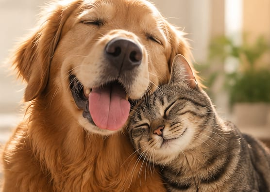
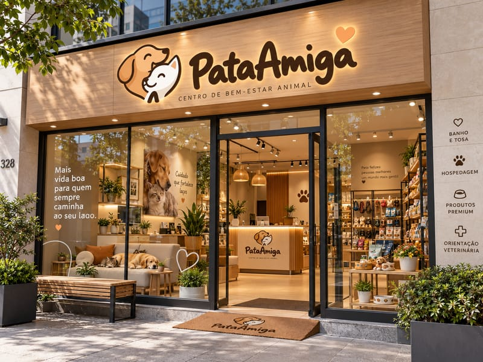
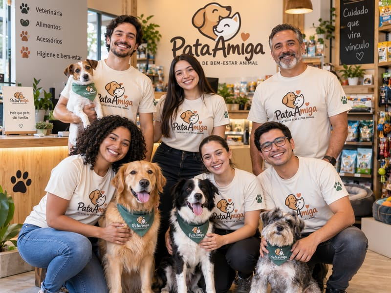

Missão
Proporcionar saúde, bem-estar e qualidade de vida para pets, com atendimento humanizado e serviços de excelência.
Centro de bem-estar animal para cães e gatos
Saúde, bem-estar e carinho para o seu pet, com uma equipe que cuida com atenção e proximidade.

Serviços
Seu pet é único. O cuidado também. Veja qual serviço combina com a rotina dele e fale com a nossa equipe.
Atendimento para acompanhar a saúde do seu cão ou gato, com orientação clara em cada etapa.
Falar sobre consultas veterináriasHigiene e beleza feitas com calma, respeitando o jeito e o conforto de cada pet.
Falar sobre banho e tosaUm lugar acolhedor para o seu pet ficar enquanto você precisa estar fora.
Falar sobre hospedagemItens para o dia a dia do seu pet, com ajuda da equipe para escolher o que faz sentido.
Falar sobre produtos e acessóriosSobre a Pata Amiga
A Pata Amiga é um centro de bem-estar animal dedicado a oferecer cuidados completos para cães e gatos. Acreditamos que pets são parte da família e merecem atenção, respeito e todo o cuidado para viverem mais e melhor.
Nosso espaço reúne serviços de saúde, higiene, beleza e hospedagem, sempre com uma equipe apaixonada por animais e comprometida com o bem-estar de cada pet.
Proporcionar saúde, bem-estar e qualidade de vida para pets, com atendimento humanizado e serviços de excelência.
Ser referência em cuidado animal, reconhecida pela confiança dos tutores e pelo impacto positivo na vida dos pets e da comunidade.
Como funciona
Você conta para a gente sobre o seu pet, a rotina dele e o que ele precisa.
Combinamos o serviço e cuidamos com atenção individual, no ritmo do seu pet.
A gente explica cada cuidado para você se sentir seguro e saber como seguir em casa.

Equipe e espaço
Um ambiente acolhedor, com luz natural, cantinhos de descanso e produtos para a rotina do seu pet. Venha conhecer o espaço e conversar com a equipe.
Uma equipe apaixonada por animais e comprometida com o bem-estar de cada pet. Venha conhecer quem vai cuidar do seu cão ou gato.

Perguntas frequentes
Não encontrou o que procurava? Fale com a equipe.
Sim. A Pata Amiga é um centro de bem-estar animal dedicado a cães e gatos.
Consultas veterinárias, banho e tosa, hospedagem, produtos e acessórios. Para saber o que se encaixa melhor na rotina do seu pet, fale com a equipe.
Entre em contato pelos canais da seção de contato e a equipe combina o melhor horário com você.
A confirmar.
A confirmar: informar se há tabela de preços pública ou se os valores são passados no atendimento.
A confirmar: período mínimo, documentos ou vacinas exigidos e o que o tutor deve levar.
Contato
Conte para a gente do que o seu pet precisa. A equipe responde e ajuda a encontrar o melhor cuidado.
Canal de agendamento a confirmar. Configure o WhatsApp em assets/js/config.js.